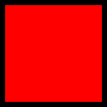

얼큰 어묵탕 만들기
- 냄비에 물을 붓고 국물용 티백을 넣고 야채를 썰어 넣으주세요.
- 물이 끓으면 티백을 건져내고 어묵을 넣어주세요.
- 간장과 고춧가루를 넣고 간을 맞춰주세요.
- 준비한 그릇에 담아주면 완성입니다!
음식 박람회 입장 안내
- 초대권 소지자 : 등록데스크에서 본인 확인 후 교환건 지급
- 사전 등록자 : 등록데스크에서 본인 확인 후 교환권 지급
- 일반 관람객 : 일반 관람객은 매표소에서 입장권을 구입하여 입장
가장 좋아하는 음식은 무엇인가요?
가. 불고기
나. 라면
다. 떡볶이
라. 삼겹살
< 텍스트 관련 태그 >
텍스트 볼드 처리
텍스트 중요 표시
텍스트를 이탤릭체로
텍스트 및줄 처리
텍스트 가운데 선 처리
텍스트아래첨자텍스트윗첨자
텍스트에 하이라이트 표시
고양이 품종별 인기순위
- 터키쉬 앙고라
- 브리티시 숏헤어
- 러시안 블루
- 아메리칸 숏헤어
사료 인기순위
- 사이언스 다이어트
- 로얄캐닌
- AFN
- 유카누바
file
htmls
반려동물이란?
사람과 더불어 살아가는 동물이란 의미로 1983년 오스트리아 빈에서 열린 애완동물 국제 심포지엄에서 처음으로 제안되었다 합니다.
게코 도마뱀이 아니라 개구리